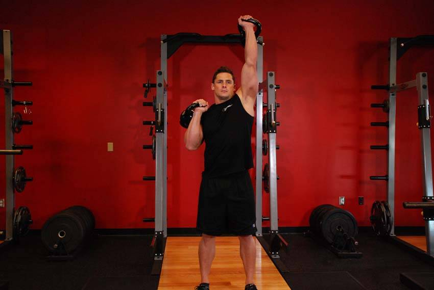

- Clean two kettlebells to your shoulders. Clean the kettlebells to your shoulders by extending through the legs and hips as you pull the kettlebells towards your shoulders. Rotate your wrists as you do so.
- Press one directly overhead by extending through the elbow, turning it so the palm faces forward while holding the other kettlebell stationary .
- Lower the pressed kettlebell to the starting position and immediately press with your other arm.
This exercise appears in Programmd training programs. Take the quiz to find one for your gym.
Find your program